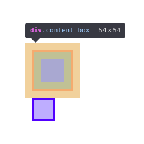
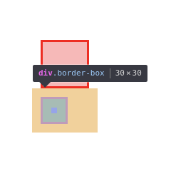

В каждом прямоугольнике рассматривается по примеру, где внутри первого показан итоговый результат, второго — HTML, третьего (если он есть) — CSS.
В Google Chrome вы можете нажать Ctrl+Shift+C и кликнуть по какому-либо элементу, чтобы посмотреть его CSS-свойства/размеры.
Отличие блоков от inline-элементов. Мы добавили два блока, затем три span'а, затем ещё один блок. Видно, как div'ы занимают всю ширину, а span'ы идут друг за другом как текст.
<div>div1</div> <div>div2</div> <span>span1</span> <span>span2</span> <span>span3</span> <div>div3</div>
CSS-свойство display отвечает за то, как должен вести себя элемент. Мы можем, например, сделать div'ы тоже инлайновыми. Или span'ы блоками, если нам это зачем-то нужно.
<div class="example-inline-div"> <div>div1</div> <div>div2</div> <span>span1</span> <span>span2</span> <span>span3</span> <div>div3</div> </div>
.example-inline-div div {
display: inline;
}
Здесь мы попытались применить width и height на элемент .bigger, но ничего не вышло (иначе он бы был сейчас 1000x1000 и занимал бы половину экрана).
Inline-элементам нельзя задавать размеры. Но если всё-таки нужно, есть inline-block, которые ведут себя как inline, но больше всё-таки блоки, что мы рассмотрим в следующем примере.
<div class="example-inline-height"> <span class="increased-font-size">span1</span> <span class="bigger">span2</span> <span class="really-bigger-height">span3</span> </div>
.example-inline-height span {
background: #f1f1f1;
}
.example-inline-height span.increased-font-size {
font-size: 150%;
}
.example-inline-height span.bigger-height {
width: 1000px;
height: 1000px;
}
.example-inline-height span.really-bigger {
display: inline-block;
width: 100px;
height: 28px;
}
Мы уменьшили максимальную ширину нашего контейнера для результата, чтобы буквы начали переноситься по строкам. И покрасили обычный inline в синеватый, а inline-block в красноватый.
Как видно, между ними есть разница. Во-первых, возможно видны разрывы в закраске A-варианта. Во-вторых правый нижний угол не закрашен. В-третьих B-вариант почему-то совершил перенос на другую строку.
Если вы попробуете уменьшить количество букв b, то как только inline-block элементу хватит места, чтобы влезть на остаток строки за a — он это сделает.
Так происходит из-за того, что только текст (содержащийся в inline-элементах) умеет переноситься с одной строки на другую. Когда мы сделали второй span inline-блоком, мы ему чётко сказали, что ты теперь блок. Он не будет занимать всю ширину, постарается сойти среди inline-элементов за своего, но если упрётся в конец строки — перенесётся целиком. Ибо блок не может быть разделён на несколько строк.
Потому что если у нас на одной строке несколько букв в конце и потом на другой ещё несколько, у нас получается два не связанных между собой прямоугольника, и тогда что такое размер у такого элемента?
<div class="example-inline-wrap"> <span class="a">a a a a a a a a a a a a a a a a a a a a a a a a a a a a a a a a a a a a a a a a a</span> <span class="b">b b b b b b b b b b b b b b b b b b b b b b b b b b b b b b b b b b b b b b b b b</span> </div>
.example-inline-wrap {
max-width: 200px;
}
.example-inline-wrap .a {
background: #b8b8ff;
}
.example-inline-wrap .b {
display: inline-block;
background: #ffb8b8;
}
Если, как писалось в самом начале, открыть DevTools и включить инспекцию элементов, то эти два квадрата будут выглядеть следующим образом:
 
Единственное различие у них — в цветах и свойстве box-sizing.
При content-box свойства width и height задают размер контента, а padding, border приплюсовываются поверх, а при border-box задаётся размер вместе с отступами и границей. Поэтому во втором случае размер контента получился 30 - 20 - 4 = 6px (дважды по 10px отступа, дважды по 2px границы).
Так же обратите внимание, что у обоих элементов есть margin по 10px, однако между двумя этими элементами расстояние не 20px.
Поля умеют схлопываться и за этим нужно следить, либо прочитать правила в спецификации CSS, по которым они схлопываются.
<div class="example-box-sizing"> <div class="content-box"></div> <div class="border-box"></div> </div>
.example-box-sizing div {
margin: 10px;
padding: 10px;
border: 2px solid;
width: 30px;
height: 30px;
}
.example-box-sizing div.content-box {
box-sizing: content-box;
border-color: red;
background: #ffb8b8;
}
.example-box-sizing div.border-box {
box-sizing: border-box;
border-color: blue;
background: #b8b8ff;
}
Существует свойство position. position: absolute позволяет выставлять элементы на конкретное место внутри блока с position: relative (или страницы, если в родителях такого блока нет).
Там по себе position: relative позволяет двигать блок на относительное количество пикселей.
Обратите внимание на блоки C и D.
Они довольно неплохо описывают, что на самом деле происходит. Первые два блока у нас position: absolute и они разлетелись по углам. position: absolute «выдёргивает» блоки и они перестают как-либо взаимодействовать своими размерами на другие.
Блок C мы сместили position: relative в сторону. А блок D у нас самый обычный.
Смотреть нужно на место, где он отображается. Если убрать с блока C позиционирование, то можно увидеть, что блок D у нас отображается после него. Т.е. позиционирование показывает элемент в другом месте, но... его старое место занято и именно оно влияет на положение других элементов.
Кроме того, важно, что при абсолютном позиционировании ноль находится внутри границы, хоть и размер блока считается вместе с границей.
<div class="example-position"> <div class="a"></div> <div class="b"></div> <div class="c"></div> <div class="d"></div> </div>
.example-position {
box-sizing: border-box;
padding: 10px;
border: 1px solid black;
width: 100px;
height: 100px;
position: relative;
}
.example-position div {
width: 20px;
height: 20px;
}
.example-position .a {
position: absolute;
top: 0;
left: 0;
background: #ffb8b8;
}
.example-position .b {
position: absolute;
bottom: 40px;
right: 20px;
background: #b8b8ff;
}
.example-position .c {
position: relative;
top: 15px;
left: 35px;
background: #b8ffcc;
}
.example-position .d {
background: #ffd0b8;
}
Обтекания текстом блоков. CSS-свойство float.
Во времена, когда использовать flexbox практически было нельзя, данное свойство было полезно тем, что при помощи него есть возможность одновременно показать блок (либо несколько) и слева и справа (либо только с одной стороны), а посередине оставить всё оставшееся место.
Т.е. к примеру, в этом же примере мы можем вместо кучи текста a a a a a сделать блок, у которого паддинг слева будет 20px, паддинг справа 60px, сделать его position: absolute, родительский relative, блоки float-left и float-right сделать 100% по высоте и получить в итоге трёхколоночный макет, где крайние колонки занимают фиксированное пространство, а центральная всё оставшееся.
Но с массовой поддержкой flexbox, о котором будет далее, данные схемы использовать обычно не приходится и float остаётся для... обтекания текстом, например, картинок в статьях.
Так же существует обратное свойство clear, которое позволяет попросить не обтекать текстом заданный блок с той либо иной стороны.
<div class="example-float">
<div class="float-left"></div>
<div class="float-right"></div>
<span>
a a a a a a a a a a a a a a a a a a a a a a a a a a a a a a a a a a a a a a a a a
a a a a a a a a a a a a a a a a a a a a a a a a a a a a a a a a a a a a a a a a a
</span>
</div>
.example-float {
max-width: 150px;
}
.example-float .float-left {
float: left;
width: 20px;
height: 20px;
background: #b8b8ff;
}
.example-float .float-right {
float: right;
width: 60px;
height: 50px;
background: #ffb8b8;
}
Здесь показаны специально косячные таблицы.
У таблицы есть два значения для table-layout: auto и fixed.
auto — вообще отличный режим, он выделяет столбцам столько места, сколько максимум есть в какой-либо из строк этой таблицы. Но есть проблема с тем, что ширину таблицы ничем нельзя ограничить в этом режиме. И нельзя, например, колонке указать max-width, ибо:
«In CSS 2.1, the effect of 'min-width' and 'max-width' on tables, inline tables, table cells, table columns, and column groups is undefined.» — CSS2.1
fixed — режим не такой хороший, как auto, но если говоришь таблице «будь 100% по ширине контейнера», то она за него не вылезет.
Не такой хороший тем, что требуется вручную указывать конкретные размеры каждой колонки, иначе они все будут равны между собой, либо посчитаются как браузеру нравится, либо в спецификации есть какой-то алгоритм по поводу этого.
С указанием конкретных размеров проблема в том, что мы не всегда знаем, сколько нам нужно. Например, в данном примере первая и третья колонки имеют немного контента, а средняя много. И если мы хотим, чтобы первая и третья занимали столько, сколько у них контента (ибо, например, там дата и кнопка, которые гарантированно будут короткими), а средняя всё оставшееся место, то конкретными размерами мы никак не угадаем, всегда будет либо больше, либо меньше.
| AA | BBBBBBBBBBBBBBBBBBBBBBB | C |
| BBBB | AAA | C |
| AA | BBBBBBBBBBBBBBBBBBBBBBB | C |
| BBBB | AAA | C |
<div class="block example-result example-table">
<table class="auto"><tbody>
<tr>
<td>AA</td>
<td>BBBBBBBBBBBBBBBBBBBBBBB</td>
<td>C</td>
</tr>
<tr>
<td>BBBB</td>
<td>AAA</td>
<td>C</td>
</tr>
</tbody></table>
<table class="fixed"><tbody>
<tr>
<td>AA</td>
<td>BBBBBBBBBBBBBBBBBBBBBBB</td>
<td>C</td>
</tr>
<tr>
<td>BBBB</td>
<td>AAA</td>
<td>C</td>
</tr>
</tbody></table>
</div>
.example-table {
max-width: 200px;
}
.example-table table {
width: 100%;
}
.example-table table.auto {
table-layout: auto;
}
.example-table table.fixed {
table-layout: fixed;
}
.example-table table.fixed td {
overflow: hidden;
text-overflow: ellipsis;
}
Не пытайтесь повторить это дома! Это таблица с table-layout: auto, одна из колонок которой занимает оставшееся место, когда другие ужимаются до максимального контента в них.
Основная идея в том, что элементы с position: absolute не занимают места на странице, как мы рассматривали выше. В спецификации CSS2.1 действие position: relative на <td> не определено, поэтому мы вкладываем дополнительный <div>.
Когда таблица замеряет размеры контента в столбцах, во втором он всегда нулевой.
Но остальным столбцам мы сказали быть width: 1px; white-space: nowrap. У auto-таблиц width обозначает минимальную ширину, а не итоговую, а white-space: nowrap запрещает переносить слова в принципе. В итоге измеряется длина самой длинной строки.
Т.к. первый и третий столбец вычислились и имеют фиксированные размеры, а таблица по размеру больше, чем они двоём в сумме, оставшееся пространство отходит второму столбцу.
Но его контент хоть и выглядит как нулевой по ширине, таковым не является, просто рисуется в position: absolute, где мы уже делаем что нам нужно.
В CSS есть одно правило с :after. Как и почему оно работает, честно говоря — я не знаю. Но если не класть эту точку без размера в контейнер, то у него не будет размеров и блок с position: absolute будет сдвинут. Само это правило эквивалентно тому, что мы положим внутрь .td-container inline-block нулевого размера.
| AA | BBBBBBBBBBBBBBBBBBBBBBB |
C |
| BBBB | AAA |
C |
<div class="example-table-magic">
<table><tbody>
<tr>
<td class="shrink">AA</td>
<td><div class="td-container"><div class="content">BBBBBBBBBBBBBBBBBBBBBBB</div></div></td>
<td class="shrink">C</td>
</tr>
<tr>
<td class="shrink">BBBB</td>
<td><div class="td-container"><div class="content">AAA</div></div></td>
<td class="shrink">C</td>
</tr>
</tbody></table>
</div>
.example-table-magic {
width: 200px;
}
.example-table-magic table {
table-layout: auto;
width: 100%;
}
.example-table-magic table td.shrink {
width: 1px;
white-space: nowrap;
}
.example-table-magic table .td-container {
position: relative;
}
.example-table-magic table .td-container:after {
content: ' ';
display: inline-block;
width: 0;
height: 0;
}
.example-table-magic table .td-container > .content {
position: absolute;
top: 0;
left: 0;
width: 100%;
overflow: hidden;
text-overflow: ellipsis;
}
Вот и всё. Осталось только прочитать гайд по flexbox'у. И долго гуглить разные свойства, либо пролистать весь их список и запомнить, какие бывают. И посмотреть на transform и transition. И дождаться смерти IE11, чтобы начать использовать Grid Layout.